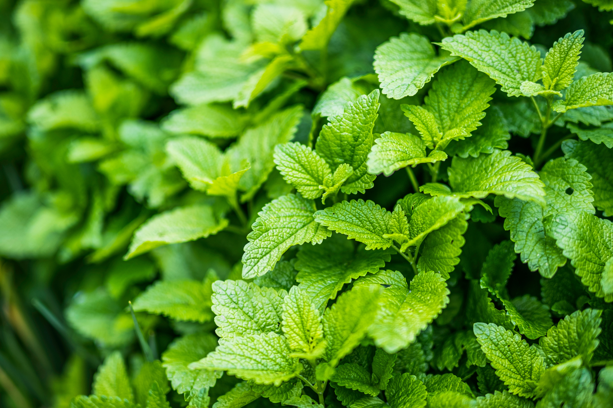
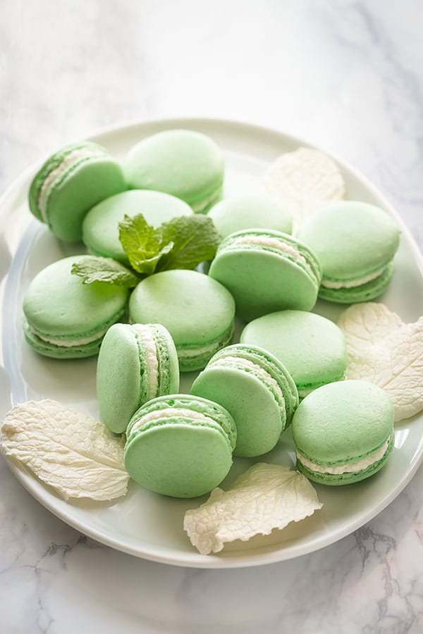

Mint
An aromatic, almost exclusively perennial herbs

Mint is the beginner’s best friend: this aromatic herb will thrive in sun or shade, will grow with little water and less attention, and will come back year after year.
light_mode
Sun explosure
Full / Partial
water_drop
Water
Well-drained soil
straighten
Spread
18''
height
Height
12''-24''
today
Lifespan
Perennial
Tips for growing:
- Mint prefers partial shade. Full sun will do, but part shade is best.
- Choose a spot with moist but well drained soil. Mint prefers fertile soil with a pH from 6.0 to 7.0.
- Plant mint seedlings after frost about 18-24 inches apart.
- Mint can be grown from seed, plants, or even one of the fastidious runners/roots.
- Harvest tips regularly to keep plants in check and encourage best growth.
- For the best flavored mint with a strong scent, transplant your mint every 3-4 years.

Recipe: Mint Macarons
- Make the meringue – make sure to whip your meringue until stiff peaks and it balls up inside your whisk.
- Sift the dry ingredients to aerate and remove large chunks.
- Mix meringue with dry ingredients until perfect consistency – runny enough to draw a figure eight.
- Pipe 1.5-inch circles on 2 baking sheets with parchment paper and bake.
- Pipe a dollop of ganache filling on bottom shell and place the other shell on top.
- Gently press to distribute the filling evenly.